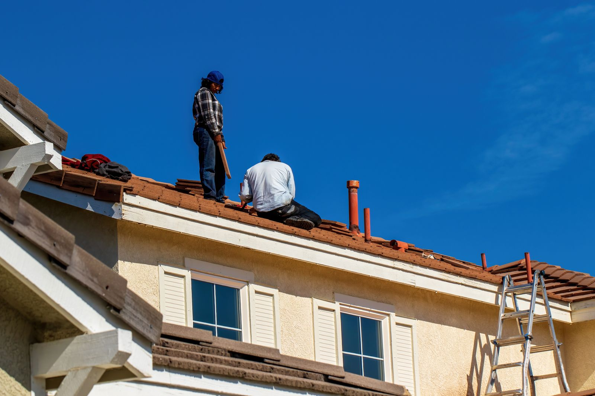

Vakkundige dakwerken
Van kleine herstellingen tot volledige dakrenovaties. Wij garanderen een waterdicht en duurzaam resultaat voor elk type dak.
Dakrenovatie
Een solide basis boven uw hoofd
Een dak is meer dan bescherming; het is de belangrijkste barrière tegen de elementen. Wij voeren volledige dakrenovaties uit met focus op duurzaamheid en isolatie.
Pannen & leien
Wij vervangen versleten dakbedekking door hoogwaardige keramische pannen, betonpannen of natuurleien, met een perfecte uitlijning en waterdichte afwerking.
Onderdak & structuur
Indien nodig versterken we de houten dakconstructie en plaatsen we een modern dampopen onderdak om uw woning te beschermen tegen stuifsneeuw en wind.
Platte daken (EPDM)
Duurzame waterdichting voor jarenlang plezier
Voor platte daken werken wij voornamelijk met EPDM. Dit synthetische rubber heeft een levensverwachting van meer dan 50 jaar en blijft uiterst flexibel.
EPDM-rubberbedekking
EPDM wordt naadloos (of met geteste naden) geplaatst. Het is uv-bestendig, wortelvast (ideaal voor groendaken) en vergt nauwelijks onderhoud.
Isolatie bij platte daken
Wij passen de 'warm dak'-methode toe, waarbij de isolatie bovenop de constructie onder de EPDM-laag komt voor maximale prestaties.
Dakgoten & herstellingen
Snelle hulp bij lekkages en schade
Kleine problemen kunnen grote schade veroorzaken. Wij staan klaar voor snelle herstellingen aan uw dakbedekking, zinkwerken of dakgoten om erger te voorkomen.
Zink- & koperwerken
Wij herstellen of vernieuwen uw dakgoten en afvoerpijpen in zink of koper voor een efficiënte afvoer van regenwater en een klassieke look.
Stormschade & lekkages
Last van een lek of losgewaaide pannen na een storm? Ons team grijpt snel in om uw woning weer veilig en droog te maken.
Veelgestelde vragen
Zit uw vraag er niet bij? Neem gerust contact op.
Hoe snel kunnen jullie bij een lek ter plaatse zijn?
Bij acute problemen zoals lekkage of stormschade proberen we zo snel mogelijk langs te komen om erger te voorkomen. Neem meteen contact op — ook een voorlopige noodoplossing kan veel schade besparen.
Hoe lang gaat een EPDM-dak mee?
EPDM-rubber heeft een levensverwachting van meer dan 50 jaar. Het is uv-bestendig, blijft elastisch en vraagt nauwelijks onderhoud — een van de duurzaamste oplossingen voor platte daken.
Vernieuwen jullie ook dakgoten en afvoer?
Ja, wij herstellen en vernieuwen dakgoten en afvoerpijpen in zink of koper, inclusief een correcte afwatering. Dit kan los of samen met een dakrenovatie.
Klaar voor uw project?
Onze experts staan klaar met een vrijblijvende offerte en advies op maat van uw woning.
Vraag een gratis offerte →Wij horen graag van u.
Werkregio
Actief in Antwerpen & omstreken.
Antwerpen, BelgiëBel ons
Beschikbaar tijdens kantooruren.
Nummer volgt